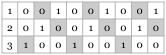

This chapter covers basic background on regret minimization and connections to game-theoretic equilibrium concepts. In particular, we will introduce and motivate the notion of \(\Phi\)-regret and the corresponding solution concept in games—\(\Phi\)-equilibrium. In the second part, we will introduce a canonical algorithmic template for minimizing \(\Phi\)-regret
1.1 Online learning and regret
We consider a learner who is to make a sequence of decisions over \(T\) rounds. The learner interacts repeatedly with an environment. In each round \(t \in \left[T\right]\), the learner specifies a mixed strategy \(\mathbf{x}^{\left(t\right)} \in \mathcal{X}\), where \(\mathcal{X}\) is a convex and compact set. (A canonical case arises when \(\mathcal{X}\) is a probability simplex over a finite set of actions, but our focus here is on the general setting.) The environment then selects a utility vector \(\mathbf{u}^{\left(t\right)}\), so that the utility obtained by the learner at that round is \(\left\langle \mathbf{x}^{\left(t\right)}, \mathbf{u}^{\left(t\right)}\right\rangle\). In the full-feedback setting, which is the focus of these notes, \(\mathbf{u}^{\left(t\right)}\) is revealed to the learner after the end of the round. An online algorithm produces a sequence of strategies based on the feedback observed up to that point.
What’s a sensible way of measuring the performance of the learner in this online environment? There are different notions of hindsight rationality. Perhaps the most common performance benchmark is regret, defined as
The second term in the right-hand side of (1) is the cumulative utility obtained by the learner through the \(T\) rounds, whereas the first term is the optimal utility that could have been obtained in hindsight through a fixed strategy. We will soon introduce more powerful notions of regret.
1.2 Games and solution concepts
We begin by introducing the canonical normal-form representation of games. While any finite game can be cast in normal form, that representation is often inefficient. This will motivate introducing more compact game representations.
Formally, we have a set of \(n\) players. In a normal-form game, each player \(i \in \left[n\right]\) has a finite set of available actions \(\mathcal{A}_i\); we will use the shorthand notation \(m_i \coloneqq |\mathcal{A}_i|\) for the number of actions. Every player \(i \in \left[n\right]\) has a utility function \(u_i\) mapping a joint action profile \(\left(a_1, ..., a_n\right) \in \mathcal{A}_1 \times \cdots \times \mathcal{A}_n\) to a real value \(u_i \left(a_1, ..., a_n\right)\). Players can randomize by specifying a probability distribution over their available actions, so that the strategy set of each player is the probability simplex \(\mathcal{X}_i = \Delta\left(\mathcal{A}_i\right)\). Under a joint strategy \(\left(x_1, ..., x_n\right) \in \Delta\left(\mathcal{A}_1\right) \times \cdots \times \Delta\left(\mathcal{A}_n\right)\), the expected utility of player \(i \in \left[n\right]\) reads
Each player is trying to maximize its expected utility.
1.2.1 Correlated and coarse correlated equilibria
A major criticism of the Nash equilibrium is that, even though one always exists—as guaranteed by the famous theorem of John Nash [Nas50][Nas50] J. Nash. (1950). Equilibrium points in N-person games. Proceedings of the National Academy of Sciences.—it is computationally intractable to find one [DGP08][DGP08] C. Daskalakis, P. Goldberg and C. Papadimitriou. (2008). The Complexity of Computing a Nash Equilibrium. SIAM Journal on Computing.—let alone a welfare-optimal one [GZ89][GZ89] I. Gilboa and E. Zemel. (1989). Nash and Correlated Equilibria: Some Complexity Considerations. Games and Economic Behavior.. As result, we shouldn’t expect simple, computationally bounded learning algorithms to converge to Nash equilibria; this raises the question: what are no-regret dynamics converging to in general-sum games?
It turns out that no-regret learning is inherently tied to coarse correlated equilibria [MV78][MV78] H. Moulin and J. Vial. (1978). Strategically zero-sum games: The class of games whose completely mixed equilibria cannot be improved upon. International Journal of Game Theory.. Let’s begin by recalling the basic definition and start building some intuition about this solution concept; for now, we restrict our attention to normal-form games.
Definition 1.1 (Coarse correlated equilibrium). A correlated distribution \(\mu \in \Delta\left(\mathcal{A}_1 \times \cdots \times \mathcal{A}_n\right)\) is an \(\epsilon\)-coarse correlated equilibrium (CCE) if for any player \(i \in \left[n\right]\) and deviation \(a_i' \in \mathcal{A}_i\),
This definition mirrors Nash equilibria, but with a critical difference: the underlying distribution \(\mu\) can be correlated; by contrast, in a Nash equilibrium \(\mu\) has to be a product distribution, reflecting the fact that players randomize independently. To explain this, let’s consider the following two distributions with respect to some \(2 \times 2\) bimatrix game (meaning that each of the two players has two available actions).
Both are distributions over \(\mathcal{A}_1 \times \mathcal{A}_2 = \left\{\mathrm{1}, \mathrm{2}\right\} \times \left\{\mathrm{1}, \mathrm{2}\right\}\), but only \(\mu'\) is a product distribution. Indeed, if Player 1—the row player—plays \(\left(\frac{1}{3}, \frac{2}{3}\right)\) and Player 2 plays \(\left(\frac{1}{2}, \frac{1}{2}\right)\), the induced distribution over the \(4\) outcomes matches \(\mu'\). In contrast, no pair of strategies gives rise to \(\mu\).
A Nash equilibrium is always a CCE; a Nash equilibrium is basically an uncorrelated (coarse) correlated equilibrium. But the set of CCEs can unlock new outcomes. Before we examine a concrete example, we also introduce the stronger notion of a correlated equilibrium, famously put forward by Aumann [Aum74][Aum74] R. Aumann. (1974). Subjectivity and Correlation in Randomized Strategies. Journal of Mathematical Economics..
Definition 1.2 (Correlated equilibrium). A correlated distribution \(\mu \in \Delta\left(\mathcal{A}_1 \times \cdots \times \mathcal{A}_n\right)\) is an \(\epsilon\)-correlated equilibrium (CE) if for any player \(i \in \left[n\right]\) and deviation function \(\phi_i : \mathcal{A}_i \to \mathcal{A}_i\), we have
Both correlated and coarse correlated equilibria can be interpreted through the use of a trusted third party—a mediator or correlation device—who samples a joint action profile \(\left(a_1, ..., a_n\right)\) from the correlated distribution \(\mu\) and then provides the corresponding action \(a_i\) to each player \(i \in \left[n\right]\) as a recommendation. From this point of view, a distribution is a CCE or a CE if no player has an incentive to deviate from the recommendation, but for CEs the set of possible deviations is richer: in a CE, a player can decide whether to deviate after observing the recommendation, while in a CCE the decision has to be made in advance. This makes a CCE harder to justify in some applications, as one would need some binding mechanism to ensure the player would not be able to deviate after observing the recommendation.
We now go over a concrete example to further elucidate these concepts.
Example 1.3. We consider the “game of chicken.” This is a \(2 \times 2\) game—played between two drivers who are rapidly approaching an intersection from different streets—whose utilities are tabulated below. Each player can either play “Stop” or “Go.” If both players elect to “Go” a crash ensues—a bad outcome for both players. If a player chooses to “Stop” it gets no utility from the game, whereas if it proceeds while the other player chooses to “Stop” it gets a utility of \(1\) for safely crossing the intersection.
This game has exactly three Nash equilibria: i) (Go, Stop), ii) (Stop, Go), and iii) \(\left(\left(\frac{5}{6}, \frac{1}{6}\right), \left(\frac{5}{6}, \frac{1}{6}\right)\right)\), meaning that both players play “Stop” with probability \(\frac{5}{6}\). From these three outcomes, the first two are not equitable in that they favor one player over the other. The third outcome is even worse: it leads to a crash with some positive probability.
(C)CEs address these issues by unlocking new outcomes. In particular, let’s consider the correlated distribution \(\frac{1}{2} \left(\mathrm{Go}, \mathrm{Stop}\right) + \frac{1}{2} \left(\mathrm{Stop}, \mathrm{Go}\right)\). It’s easy to verify that this is a CE, and thus a CCE. Under that distribution, both players get in expectation a utility of \(\frac{1}{2}\). Focusing CEs, there is a natural interpretation of this outcome through a traffic light, which provides a signal to each player. If Player 1 is recommended “Stop,” it means that Player 2 will play “Go” with probability \(1\), so stopping is in Player 1’s interest. On the other hand, if Player 1 is recommended “Go,” it means that Player 2 will play “Stop” with probability \(1\), so crossing is safe for Player 1. That is, in a CE, the signal a player observes updates that player’s beliefs concerning the behavior of the other players
Example 1.4. Our next example clarifies the difference between CCEs and CEs. We consider a \(4 \times 4\) bimatrix game described with the payoff matrices
for the row and column player, respectively. We label each player’s actions as “1,” “2,” “3,” and “4.” We claim that the distribution \(\mu = \frac{1}{2} \left(\mathrm{1}, \mathrm{1}\right) + \frac{1}{2} \left(\mathrm{2}, \mathrm{2}\right)\) is an exact CCE of this game, whereas the CE gap of \(\mu\) is large—namely, \(1\). Specifically, the swap deviation \(\phi\) that results in a large deviation gain is \(1 \mapsto 3\) and \(2 \mapsto 4\); the mapping for the rest of the actions is moot, as they are never played under \(\mu\). While each player obtains a utility of \(2\) under \(\mu\), deviating per \(\phi\) gives a utility of \(3\). At the same time, \(\mu\) is a CCE as it is robust with respect to constant deviations.
1.2.2 Computational properties
We have seen that CCEs and CEs produce new outcomes that are not attainable under independent randomization. Moreover, correlated equilibrium concepts have better computational properties than Nash equilibria. Specifically, a key property is that the set of (C)CEs is convex and can be described through a linear program.
Proposition 1.5. There is a linear program with \(\prod_{i=1}^n |\mathcal{A}_i|\) variables and \(\sum_{i=1}^n |\mathcal{A}_i| \left(|\mathcal{A}_i| - 1\right)\) constraints whose solution is an exact correlated equilibrium of the game.
While the number of swap deviations of each player \(i \in \left[n\right]\) is \(|\mathcal{A}_i|^{|\mathcal{A}_i|}\), it’s enough to consider only a certain subset of swap deviations—ones that only change a single action; such deviations are called internal—with size \(|\mathcal{A}_i| \left(|\mathcal{A}_i| - 1\right)\); the simple proof is left as an exercise. This means that, for normal-form games with a constant number of players, a correlated equilibrium can be computed in polynomial time.
One caveat of this characterization is that the size of the LP grows exponentially with the number of players; the basic reason why this happens is that a correlated distribution in multi-player games is an exponential objective—one needs to specify the value of \(\prod_{i=1}^n |\mathcal{A}_i| - 1\) coordinates. As we shall see in the sequel, there is an ingenious algorithm for addressing this issue. For now, it is reassuring to know that one can compute a CE in normal-form games with a constant number of players. It is worth noting that one can also incorporate any linear objective function into the linear program, such as the social welfare—the sum of the players’ utilities.
1.2.3 Connection to no-regret learning
As we have alluded to, (coarse) correlated equilibria are closely tied to the framework of regret minimization in online learning.
\(\Phi\)-regret. To formalize this connection in its full generality, we will now introduce the important concept of \(\Phi\)-regret. It is a measure of the learner’s performance parameterized by a family of strategy deviations \(\Phi\). For a set of deviations \(\Phi\) comprising functions \(\phi : \mathcal{X} \to \mathcal{X}\), \(\Phi\)-regret is defined as
We covered a moment ago the special case where \(\Phi\) comprises only constant deviations: \(\Phi_{\mathrm{const}} = \left\{ \phi : \exists \mathbf{x}' \in \mathcal{X} \mathrm{\ such\ that\ } \phi\left(\mathbf{x}\right) = \mathbf{x}' \right\}\); this is indeed the most standard definition of regret in online learning, typically referred to as external regret. The key point about (7) is that the richer the set of deviations \(\Phi\), the stronger the induced notion of hindsight rationality. The other end of the spectrum where \(\Phi\) consists of all possible deviations \(\mathcal{X} \to \mathcal{X}\) gives rise to swap regret. The next example shows that an algorithm can experience large swap regret even when its external regret is small.
Example 1.6. Let’s say the learner picks a distribution over three actions, “1,” “2,” and “3.” Suppose further that the sequence of utilities and selected actions follow the pattern shown in Figure 1, where we can assume \(T = 0 \bmod 3\). In this example, the learner obtains overall a utility of \(\frac{T}{3}\). In fact, this matches the optimal strategy in hindsight. So, the external regret of the learner is \(0\) in this example. At the same time, consider the swap deviation
Under that deviation, the learner would be able to collect maximal utility, implying that the swap regret of the learner is \(\Omega\left(T\right)\).

This example shows that external regret—and the associated solution concept of a CCE—is weak benchmark. In fact, a CCE can be supported on strictly dominated actions [VZ13][VZ13] Y. Viossat and A. Zapechelnyuk. (2013). No-regret dynamics and fictitious play. Journal of Economic Theory.! This motivates considering tighter equilibrium concepts revolving around the notion of \(\Phi\)-regret.
Now, the techniques we have covered so far for minimizing external regret will not be enough to minimize swap regret. For example, multiplicative weights update (MWU) can have linear swap regret [CL06][CL06] N. Cesa-Bianchi and G. Lugosi. (2006). Prediction, learning, and games.. As a result, we will need new algorithmic ideas to go beyond external regret and coarse correlated equilibria.
Before we proceed, we formalize the connection between minimizing \(\Phi\)-regret and correlated equilibrium concepts. We now extend our scope to general multilinear games. Here, each player \(i \in \left[n\right]\) selects a strategy \(\mathbf{x}_i \in \mathcal{X}_i\) from a convex and compact set \(\mathcal{X}_i\), so that for any joint strategy \(\left(\mathbf{x}_1, \dots, \mathbf{x}_n\right) \in \mathcal{X}_1 \times \cdots \times \mathcal{X}_n\), the utility can be expressed as \(u_i \left(\mathbf{x}_1, \dots, \mathbf{x}_n\right) = \left\langle \mathbf{x}_i, \mathbf{u}_i \left(\mathbf{x}_{-i}\right)\right\rangle\) for some utility vector \(\mathbf{u}_i\) that does not depend on \(\mathbf{x}_i\). This is a useful abstraction for encompassing both normal- and extensive-form games, the latter under the so-called sequence-form representation.
Definition 1.7. A correlated distribution \(\mu \in \Delta\left(\mathcal{X}_1 \times \cdots \times \mathcal{X}_n\right)\) is an \(\epsilon\)-\(\Phi\)-equilibrium if for any player \(i \in \left[n\right]\) and deviation function \(\phi_i: \mathcal{X}_i \to \mathcal{X}_i\),
Theorem 1.8. Suppose that each player \(i \in \left[n\right]\) incurs \(\Phi_i\)-regret \(\Phi\mathrm{reg}_i^{\left(T\right)}\) under the sequence of utilities \(\left(\mathbf{u}_i \left(\mathbf{x}^{\left(t\right)}_{-i}\right)\right)_{t=1}^T\). Then the average correlated distribution of play \(\mu \coloneqq \frac{1}{T} \sum_{t=1}^T \mathbf{x}_1^{\left(t\right)} \otimes \cdots \otimes \mathbf{x}_n^{\left(t\right)}\) is an \(\epsilon\)-\(\Phi\)-equilibrium with \(\epsilon = \frac{1}{T} \max_{1 \le i \le n} \Phi\mathrm{Reg}_i^{\left(T\right)}\).
Above, \(\mathbf{x}_1^{\left(t\right)} \otimes \cdots \otimes \mathbf{x}_n^{\left(t\right)}\) is the product distribution induced by \(\left(\mathbf{x}_1^{\left(t\right)}, \dots, \mathbf{x}_n^{\left(t\right)}\right)\); \(\otimes\) denotes the tensor product. The distribution \(\mu\) produced by Theorem 1.8 is a mixture of \(T\) product distributions. Correlation arises by playing multiple iterations of the game. As a special case, Theorem 1.8 implies that players minimizing swap regret converge—in terms of the average correlated distribution of play—to correlated equilibria, whereas external regret is associated with coarse correlated equilibria.
Proof. For any player \(i \in \left[n\right]\), we have
by multilinearity. Let \(\mu = \frac{1}{T} \sum_{t=1}^T \bigotimes_{i=1}^n \mathbf{x}_i^{\left(t\right)}\). Continuing from (10),
1.3 A framework for minimizing \(\Phi\)-regret
Having connected \(\Phi\)-regret with \(\Phi\)-equilibria, we now introduce the elegant framework of Gordon, Greenwald and Marks [GGM08][GGM08] G. J. Gordon, A. Greenwald and C. Marks. (2008). No-regret learning in convex games. International Conference on Machine Learning. to minimize \(\Phi\)-regret in the online learning setting; by virtue of Theorem 1.8, one can then compute a \(\Phi\)-equilibrium by having each player employ such algorithms.
Reducing \(\Phi\)-regret to external regret. The key idea in the construction of Gordon, Greenwald and Marks [GGM08] is that one can reduce minimizing \(\Phi\)-regret to minimizing external regret. The framework of Gordon, Greenwald and Marks [GGM08] provides a general template based on two basic subroutines.
1. A fixed-point oracle: for any deviation \(\phi \in \Phi\), it outputs a fixed point \(\mathbf{x} = \phi\left(\mathbf{x}\right)\). <item:fp> 2. An online algorithm \(R_{\Phi}\) minimizing external regret with respect to the set \(\Phi\). <item:phireg>
Regarding the fixed-point oracle, we will assume that \(\Phi\) consists of continuous functions mapping \(\mathcal{X}\) to \(\mathcal{X}\), so that the existence of a fixed point is guaranteed by Brouwer’s fixed-point theorem; whether such a fixed point can be computed efficiently is a different story. (As we shall see in the sequel, computing approximate fixed points of general functions is known to be equivalent to finding Nash equilibria [DGP08][DGP08] C. Daskalakis, P. Goldberg and C. Papadimitriou. (2008). The Complexity of Computing a Nash Equilibrium. SIAM Journal on Computing., which defeats the purpose.) For now, we can assume that \(\Phi\) is structured enough so that it admits an efficient fixed-point oracle; for example, this is the case when \(\Phi\) contains only linear deviations. A final point is that it will be enough if one has instead an approximate fixed-point oracle, in that \(\left\lVert \mathbf{x} - \phi\left(\mathbf{x}\right)\right\rVert \le \epsilon\).
Assuming access to a fixed-point oracle, the reduction of Gordon, Greenwald and Marks [GGM08][GGM08] G. J. Gordon, A. Greenwald and C. Marks. (2008). No-regret learning in convex games. International Conference on Machine Learning. reduces \(\Phi\)-regret to external regret, but with an important catch: the algorithm minimizing external regret needs to operate over the set of deviations \(\Phi\). This is a significantly more complex set than the one we started with, and will be the critical step in establishing efficient \(\Phi\)-regret minimizers.
Assuming access to these oracles, the algorithm of Gordon, Greenwald and Marks [GGM08] produces a \(\Phi\)-regret minimizer \(R\) as follows.
- In every time \(t \in \left[T\right]\), it obtains the next strategy \(\phi^{\left(t\right)}\) of \(R_{\Phi}\). \(R\) then produces as the next strategy \(\mathbf{x}^{\left(t\right)} \in \mathcal{X}\) any fixed point of \(\phi^{\left(t\right)}\) through the fixed-point oracle.
- Next, upon observing \(\mathbf{u}^{\left(t\right)}\), \(R\) feeds to \(R_{\Phi}\) the utility function \(u^{\left(t\right)}_{\Phi}: \phi \mapsto \left\langle \phi\left(\mathbf{x}^{\left(t\right)}\right), \mathbf{u}^{\left(t\right)}\right\rangle\).
Theorem 1.9. If \(\mathrm{Reg}^{\left(T\right)}\) is the external regret of \(R_{\Phi}\) and \(\Phi\mathrm{Reg}^{\left(T\right)}\) is the \(\Phi\)-regret of \(R\), then \(\mathrm{Reg}^{\left(T\right)} = \Phi\mathrm{Reg}^{\left(T\right)}\).
Proof. We have
since \(\mathbf{x}^{\left(t\right)} = \phi^{\left(t\right)} \left(\mathbf{x}^{\left(t\right)}\right)\). Continuing from (12),
NextStrategy():NextStrategy\(\left(\right)\)ObserveUtility(\(\mathbf{u}^{\left(t\right)}\)):ObserveUtility\(\left(u_\Phi^{\left(t\right)}\right)\)1.3.1 The algorithm of Blum and Mansour
Finally, we will see how to make use of the previous framework to minimize swap regret when the underlying strategy set is the probability simplex—corresponding to normal-form games. The resulting algorithm was first developed by Blum and Mansour [BM07][BM07] A. Blum and Y. Mansour. (2007). From External to Internal Regret. Journal of Machine Learning Research. (we also refer to a closely related algorithm due to Stoltz and Lugosi [SL05][SL05] G. Stoltz and G. Lugosi. (2005). Internal regret in on-line portfolio selection. Machine Learning.). As alluded to above, the key to applying the framework of Gordon, Greenwald and Marks [GGM08] is to understand the structure of the set of deviations \(\Phi\). In this special case, it is enough to consider only linear functions mapping \(\Delta\left(\mathcal{A}\right)\) to \(\Delta\left(\mathcal{A}\right)\), for which there is a simple combinatorial characterization in terms of (column)-stochastic matrices.
Lemma 1.10. Any linear function \(\phi : \Delta\left(\mathcal{A}\right) \to \Delta\left(\mathcal{A}\right)\) can be equivalently expressed as \(\mathbf{x} \mapsto \mathbf{M} \mathbf{x}\) for some stochastic matrix \(\mathbf{M}\).
In proof, since \(\phi\) is linear it can be expressed as \(\mathbf{x} \mapsto \mathbf{M} \mathbf{x}\) for some matrix \(\mathbf{M}\). Now, every column of \(\mathbf{M}\) is equal to the output of \(\phi\) for the probability distribution that places all the probability in the corresponding action profile. Since \(\phi\) maps \(\Delta\left(\mathcal{A}\right)\) to \(\Delta\left(\mathcal{A}\right)\), it follows that every column of \(\mathbf{M}\) is a probability distribution.
Armed with the characterization of Lemma 1.10, we now see how to implement the two oracles required in the framework of Gordon, Greenwald and Marks [GGM08][GGM08] G. J. Gordon, A. Greenwald and C. Marks. (2008). No-regret learning in convex games. International Conference on Machine Learning.. First, a stochastic matrix induces a Markov chain over \(\mathcal{A}\). Any stationary distribution of that Markov chain is a fixed point, and can be computed efficiently as it boils down to solving a linear system. (More broadly, when the underlying set \(\mathcal{X}\) is a polytope and \(\Phi\) comprises linear deviations, computing a fixed point amounts to solving a linear program, which can be done in polynomial time.)
The next step is to minimize regret with respect to the set of stochastic matrices. By definition, the set of stochastic matrices is a product of simplices—one probability distribution for each column:
where, for \(\mathbf{x}, \mathbf{x}' \in \mathbb{R}^{\mathcal{A}}\), \(\left[ \left(\mathbf{x}, \mathbf{x}'\right) \right]\) denotes the matrix with columns \(x\) and \(x'\). Minimizing (external) regret over such a set can be accomplished by simply having an independent regret minimizer for each column.
Lemma 1.11. There is an efficient no-regret algorithm for minimizing external regret over the set of stochastic matrices.
The overall construction is given below. It consists of \(|\mathcal{A}|\) separate regret minimizers, \(\left(R_a\right)_{a \in \mathcal{A}}\), each of which operates over \(\Delta\left(\mathcal{A}\right)\). To obtain the next strategy, we create the stochastic matrix \(\mathbf{M}^{\left(t\right)}\) in which each column is given by the strategy of the corresponding regret minimizer, and then output any fixed point of \(\mathbf{M}^{\left(t\right)}\). To explain the second part of the algorithm, let’s first note that the utility observed by \(R_{\Phi}\), per the construction in Theorem 1.9, can be cast as \(u_{\Phi}\left(\phi\right) = \left\langle \phi\left(\mathbf{x}^{\left(t\right)}\right), \mathbf{u}^{\left(t\right)}\right\rangle = \left\langle \mathbf{M} \mathbf{x}^{\left(t\right)}, \mathbf{u}^{\left(t\right)}\right\rangle = \left\langle \mathbf{M}, \mathbf{u}^{\left(t\right)} \otimes \mathbf{x}^{\left(t\right)}\right\rangle\), where we used that \(\phi\left(\mathbf{x}^{\left(t\right)}\right) = \mathbf{M} \mathbf{x}^{\left(t\right)}\). In other words, \(R_{\Phi}\) observes the utility vector \(\mathbf{u}^{\left(t\right)} \otimes \mathbf{x}^{\left(t\right)}\). Moreover, one should forward to each \(R_a\) its corresponding component, which is \(\mathbf{x}^{\left(t\right)}\left[a\right] \mathbf{u}^{\left(t\right)}\). If we instantiate each \(R_a\) with MWU and invoke Theorem 1.9, we arrive at the following result.
Theorem 1.12. There is an online algorithm whose swap regret is bounded by \(O\left(\sqrt{T |\mathcal{A}| \log |\mathcal{A}|}\right)\).
The naive argument here would only yield a swap regret bound of \(O\left(|\mathcal{A}| \sqrt{T \log |\mathcal{A}|}\right)\) since each MWU algorithm incurs an external regret bounded by \(O\left(\sqrt{T \log |\mathcal{A}|}\right)\). However, one can make use of the structure of the utilities to obtain the improved bound claimed in Theorem 1.12. In particular, we observe that for any \(t \in \left[T\right]\),
So, using the regret bound of MWU together with Theorem 1.9,
Optimizing the learning rate \(\eta\) gives the claim.
NextStrategy():NextStrategy\(\left(\right)\)ObserveUtility(\(\mathbf{u}^{\left(t\right)} \in \mathbb{R}^{\mathcal{A}}\)):ObserveUtility\(\left(\mathbf{u}_a^{\left(t\right)}\right)\)Bibliography for this chapter
[Nas50]J. Nash. (1950). Equilibrium points in N-person games. Proceedings of the National Academy of Sciences.
[DGP08]C. Daskalakis, P. Goldberg and C. Papadimitriou. (2008). The Complexity of Computing a Nash Equilibrium. SIAM Journal on Computing.
[GZ89]I. Gilboa and E. Zemel. (1989). Nash and Correlated Equilibria: Some Complexity Considerations. Games and Economic Behavior.
[MV78]H. Moulin and J. Vial. (1978). Strategically zero-sum games: The class of games whose completely mixed equilibria cannot be improved upon. International Journal of Game Theory.
[Aum74]R. Aumann. (1974). Subjectivity and Correlation in Randomized Strategies. Journal of Mathematical Economics.
[VZ13]Y. Viossat and A. Zapechelnyuk. (2013). No-regret dynamics and fictitious play. Journal of Economic Theory.
[CL06]N. Cesa-Bianchi and G. Lugosi. (2006). Prediction, learning, and games.
[GGM08]G. J. Gordon, A. Greenwald and C. Marks. (2008). No-regret learning in convex games. International Conference on Machine Learning.
[BM07]A. Blum and Y. Mansour. (2007). From External to Internal Regret. Journal of Machine Learning Research.
[SL05]G. Stoltz and G. Lugosi. (2005). Internal regret in on-line portfolio selection. Machine Learning.